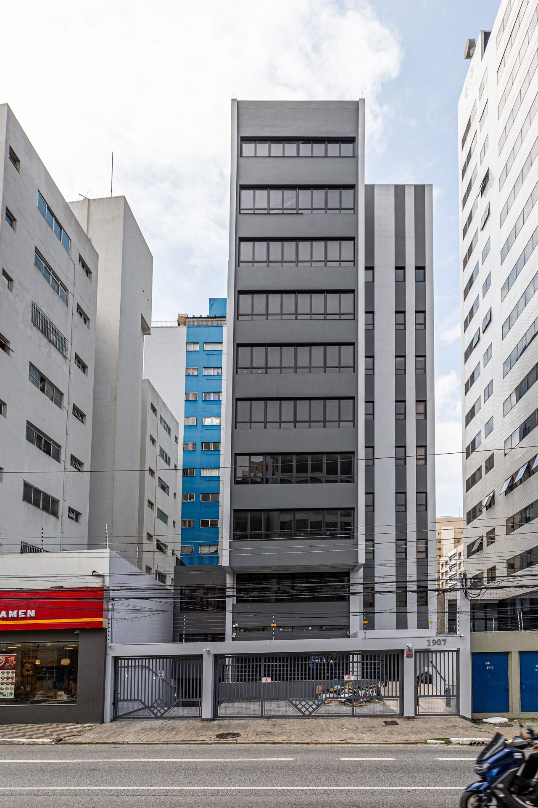

Um prédio
inteiro.
Para sua operação.
A 270 metros do Metrô Saúde.
1.600 m² de área útil, 9 pavimentos e 18 vagas para reunir operação, equipe e marca em um único endereço.
Fale conoscoIPTU INCLUSO

Sua empresa não precisa ocupar um andar.
Pode ocupar o prédio inteiro.
Do atendimento à diretoria, organize a experiência em torno da sua empresa.
- Recepção e circulação próprias
- Departamentos organizados por pavimento
- Mais privacidade para a operação
- Uma presença institucional no endereço
Tudo em um
único endereço.
Um edifício inteiro permite organizar diferentes áreas da operação verticalmente, sem fragmentar a empresa em endereços diferentes.
ÁREA ÚTIL INFORMADA
PAVIMENTOS
VAGAS DE GARAGEM
CARREGADORES ELÉTRICOS
METRÔ SAÚDE
METRÔ SÃO JUDAS
AEROPORTO DE CONGONHAS
Conheça o prédio
antes da visita.
Um percurso pelos espaços reais.
Depois, veja de perto como eles funcionam para você.
Veja os espaços.
Imagine a distribuição.
Veja a escala.
Explore os detalhes.
18 fotografias selecionadas.
Toque para ampliar.
270 metros.
Da Estação Saúde.
Para uma operação com pessoas circulando todos os dias, mobilidade não é apenas conveniência. É infraestrutura.
Avenida Jabaquara, 1907 · São Paulo
Consulte os trajetos para Imigrantes, Bandeirantes e Corredor Norte-Sul.
Um endereço.
Para diferentes necessidades.
Espaço adaptável ao seu projeto
Distribuição por pavimentos
Configuração a definir com a operação
O edifício pode atender diferentes necessidades de ocupação. A viabilidade de cada atividade depende de análise técnica, zoneamento, licenciamento e adequações próprias do projeto.
Avaliar para minha empresaUma operação.
Vários níveis
de possibilidade.
Organize equipes, atendimento e áreas de apoio conforme a lógica do seu negócio.
Potencial para diretoria, reuniões, treinamento ou convivência. Configuração a definir conforme a operação.
Áreas conforme material fornecido. O duplex possui aproximadamente 200 m². Distribuição ilustrativa, sem escala arquitetônica.
200 m².
Outra perspectiva
para a operação.
Um espaço que pode receber diretoria, salas de reunião, conselho, treinamento, auditório ou uma área de convivência separada da operação principal.
Possibilidades de configuração, sujeitas à avaliação técnica. As fotografias da galeria não foram atribuídas a pavimentos sem identificação documental.
Conhecer o prédio18 vagas.
4 com carregadores elétricos.
Espaço para apoiar a rotina de diretoria, clientes, visitantes e operação.
O prédio inteiro.
1.600 m² · 9 pavimentos · 18 vagas · 270 m do Metrô Saúde
Agendar uma visitaConsulte disponibilidade e condições comerciais vigentes.Este prédio funciona para a sua operação?
Fale diretamente com um especialista, esclareça suas dúvidas e, se fizer sentido, agende uma visita.
Fale conosco · IPTU incluso
Antes da visita.
Os dados para uma primeira avaliação.
Qual é a área útil total?
A área útil total informada é de 1.600 m², conforme a distribuição dos pavimentos apresentada nesta página.
Quantos pavimentos possui?
São 9 pavimentos informados, além do subsolo. A distribuição fornecida vai do térreo ao 8º pavimento, identificado como duplex.
O prédio pode ser ocupado por uma única empresa?
Sim. A proposta é a locação do prédio inteiro, com a possibilidade de concentrar sua operação em um único endereço.
É possível organizar a operação por pavimentos?
Sim. Os pavimentos podem organizar departamentos ou núcleos da operação de maneira independente. A proposta comercial apresentada é para o prédio inteiro.
Quantas vagas existem?
São 18 vagas de garagem.
Existem carregadores para veículos elétricos?
Sim. Quatro vagas possuem carregadores para veículos elétricos, conforme as informações fornecidas.
Qual a distância do Metrô Saúde?
A distância informada é de 270 metros da Estação Saúde, na Linha 1–Azul.
Qual a distância do Metrô São Judas?
A distância informada é de 550 metros da Estação São Judas, na Linha 1–Azul.
Qual é o valor da locação?
Condições especiais para locação. Consulte o corretor para conhecer os valores e a disponibilidade.
O IPTU está incluso?
Sim. O IPTU está incluso na locação. Consulte as condições com o corretor.
Posso agendar uma visita?
Sim. Utilize o canal de atendimento para verificar a disponibilidade de horários. O pedido não confirma automaticamente uma data.
O imóvel pode receber clínica, laboratório ou instituição de ensino?
O imóvel apresenta características que podem atender diferentes tipos de operação. A viabilidade de cada atividade deve considerar zoneamento, licenças, exigências técnicas e eventuais adequações necessárias.
Um prédio inteiro.
A 270 metros
do Metrô Saúde.
1.600 m² · 9 pavimentos · 18 vagas
CONDIÇÕES ESPECIAISFale conosco IPTU incluso